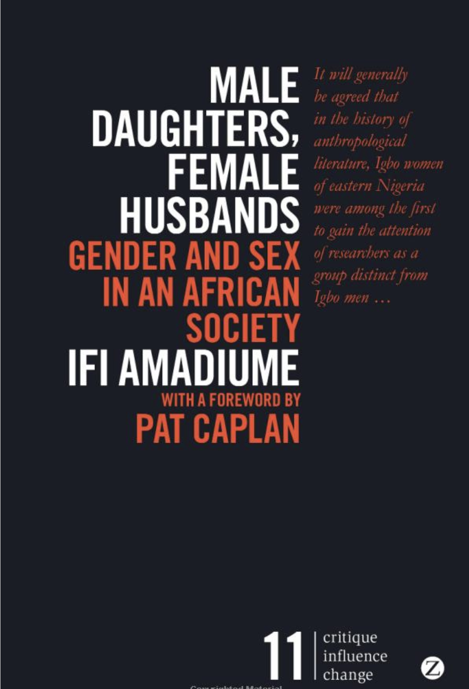

|  | ||
|---|---|---|
Binary Models
German National Library
Differentiated Person gender Gender Value
- male
- female
- not known
ISO 5218
- 0 – not known
- 1 – male
- 2 – female
- 9 – not applicable

vCard
sex
- M – male
- F – female
- O – other
- N – not applicable
- U – unknown
gender-identity
free-form text
Text Encoding Initiative
person
persongrp
persona
<sex>
@sexteidata.sex
Suggestion: Use vCard sex or ISO 5218
TEI Consortium (2021)
The other category

- Easy for the modeller
- Stigmatising and othering Kronk et al. (2021), Puckett et al. (2020)
Wikidata
P21 “sex or gender” Wikidata (2020)